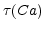

Subsections
CaGate_Yamada98
From: Yamada, Koch and Adams: Multiple Channels and Calcium Dynamics, Editors: Koch, Segev, MIT Press 1998). Can only be connected to CaChannel_Yamada98 class, where the Ca mechanism is included
- Ts :
- Scale of the time constant 
- nummethod (flag) :
- Numerical method for the solution of the differential equation: Exp. Euler = 0, Crank-Nicolson = 1
- k (1) :
- The exponent of the gate
- p :
- The state variable.
- P (1) :
- The output
P(t,V) = p(t,V)k of the gate.